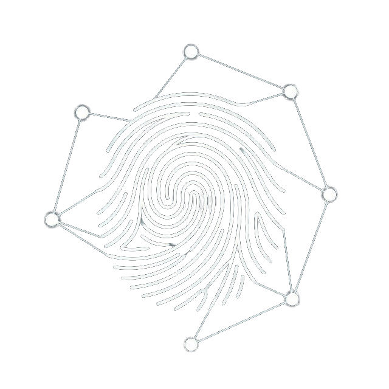
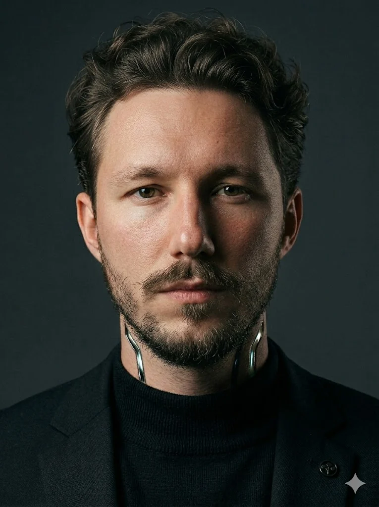
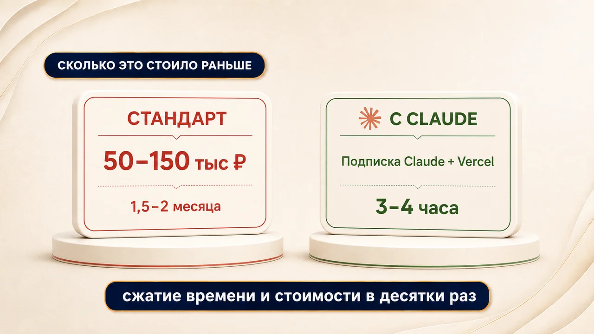
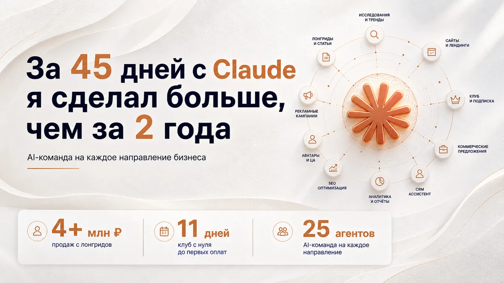
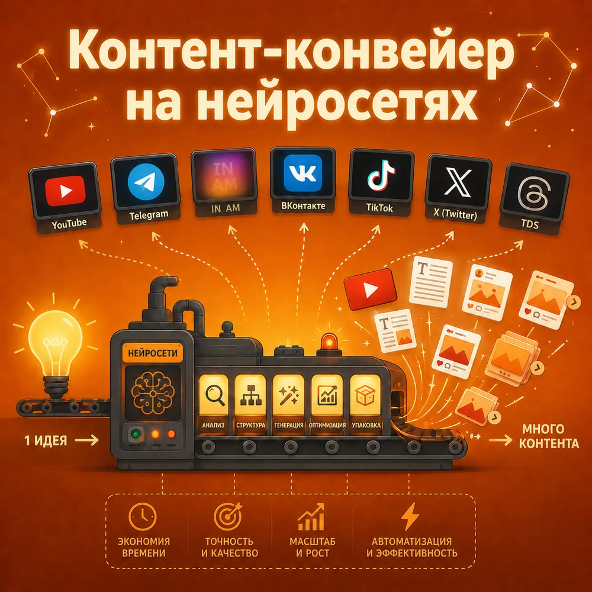

NEXTGENЯ предприниматель. За 45 дней с Claude сделал больше, чем за 2 года. В канале показываю, как это повторить: реальные связки, кейсы и цифры.
Читать канал в Telegram
Сайт заказываешь подрядчику и ждёшь неделями. Контент пишешь руками или нанимаешь команду. Рутину тащишь на себе.
А рядом один человек с ИИ закрывает это за часы и в разы дешевле. Разница не в таланте. Разница в инструменте.

Это не чат, который отвечает на вопросы. Это инструмент, который сам пишет, собирает и доводит задачу до результата. За полтора месяца я в одиночку собрал 25 ИИ-агентов, 3 сайта и клуб. Без кода и без вложений.


Виктор Дачников
Основатель агентства NEXTGEN MEDIA. 800+ млн рублей выручки клиентам, 400+ млн рекламного бюджета, 200+ проектов. Спикер Белой Конфы и Сурового Питерского СММ. Сейчас строю продукты на ИИ и показываю всю кухню в канале.
В закрепе лежит моя пошаговая инструкция: как зарегистрировать, установить и оплатить Claude Code из России. Забирай и начинай собирать своё.
Подписаться на канал